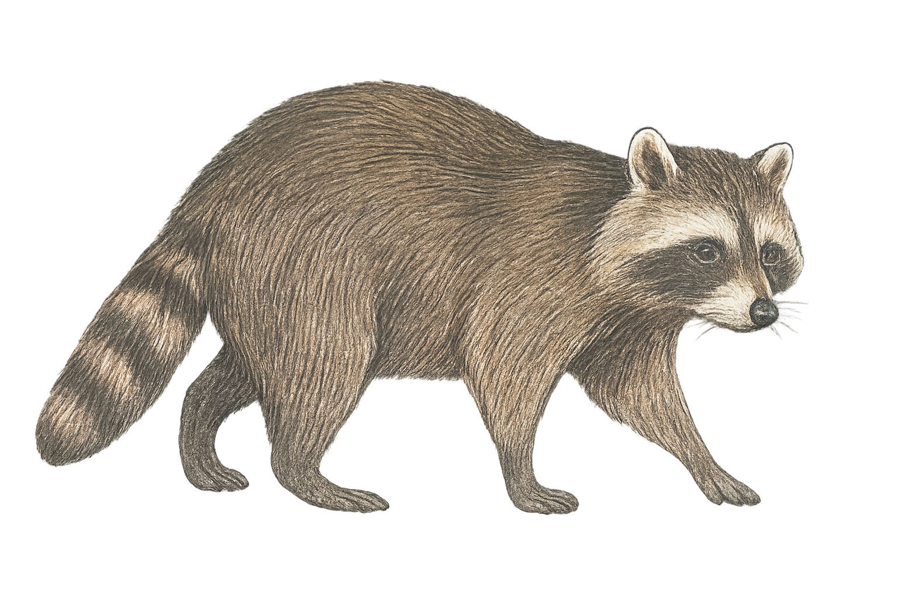
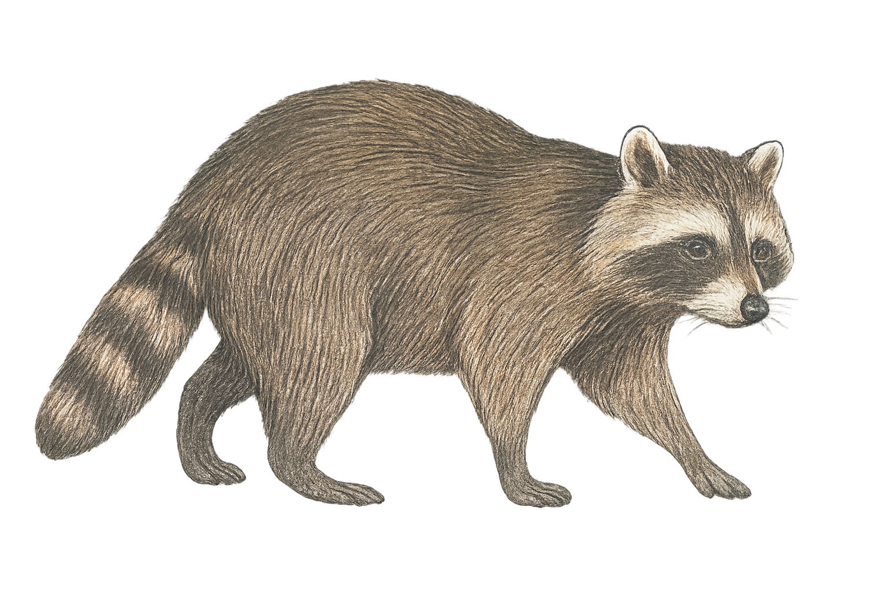

Allgemeines
Der Waschbär stammt ursprünglich aus Nordamerika, wurde aber vom Menschen nach Europa gebracht. Er ist etwa 40 bis 70 Zentimeter lang, dazu kommt ein buschiger Schwanz von rund 20 bis 40 Zentimetern. Erwachsene Tiere wiegen meist zwischen 4 und 9 Kilogramm. Typisch sind die dunkle „Gesichtsmaske“ um die Augen und der geringelte Schwanz. Waschbären können in der Wildnis bis zu 5 Jahre alt werden, in Gefangenschaft auch deutlich länger. In Deutschland leben heute schätzungsweise über 100.000 Tiere.
Lebensraum
Waschbären sind sehr anpassungsfähig und bewohnen Wälder, Flussufer, Felder und auch Städte. Sie suchen sich Baumhöhlen oder Dachböden als Unterschlupf, manchmal auch alte Nester anderer Tiere. Besonders wohl fühlen sie sich in strukturreichen Landschaften mit Wasser, weil sie dort viele Verstecke und Nahrung finden.
Nahrung
Der Waschbär ist ein Allesfresser. Er ernährt sich von Würmern, Schnecken, Insekten, Früchten, Beeren und Obst. Außerdem frisst er Abfälle und plündert gelegentlich Vogelnester, zum Beispiel von Amseln. Seine Feinde sind in Deutschland nur wenige: vor allem größere Greifvögel wie der Uhu, außerdem Füchse und der Straßenverkehr, dem viele Tiere zum Opfer fallen.
Besonderheiten
Waschbären sind sehr geschickt mit ihren Vorderpfoten, mit denen sie Nahrung ertasten und scheinbar „waschen“, bevor sie sie fressen – daher kommt ihr deutscher Name. Sie sind dämmerungs- und nachtaktiv und gelten als clevere Opportunisten, die jede Nahrungsquelle nutzen, die sie finden können. In Städten können sie sogar Mülleimer öffnen.
Gefährdung und Schutz
In ihrem Ursprungsgebiet Nordamerika sind Waschbären nicht gefährdet. In Deutschland gelten sie als Neozoen (eingewanderte Tiere), die sich stark verbreitet haben. Deshalb werden sie nicht speziell geschützt, sondern vielerorts bejagt, um ihre Ausbreitung zu kontrollieren. Sie können für Vogelbestände ein Problem darstellen, weil sie Nester plündern. Ein Rückgang des Uhus wurde ebenfalls teilweise dem Waschbären zugeschrieben, da er Horste plündert.
So klingt der Waschbär
Zurück zur Startseite